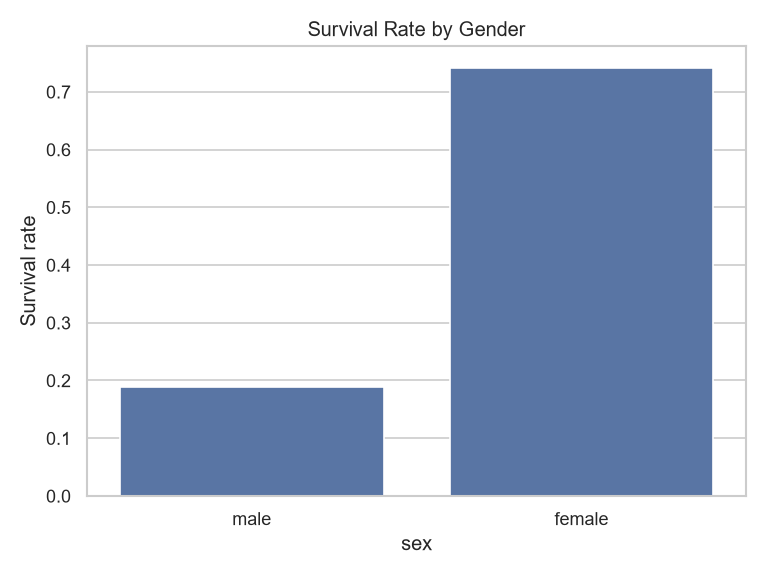
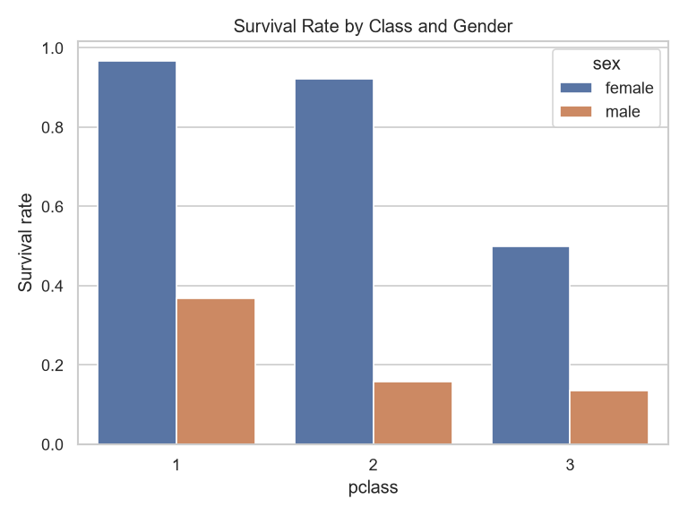
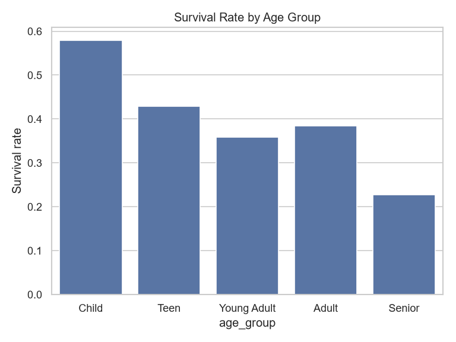
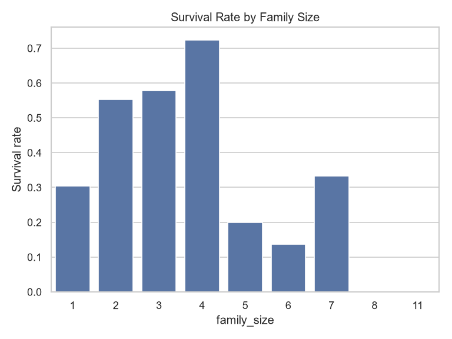
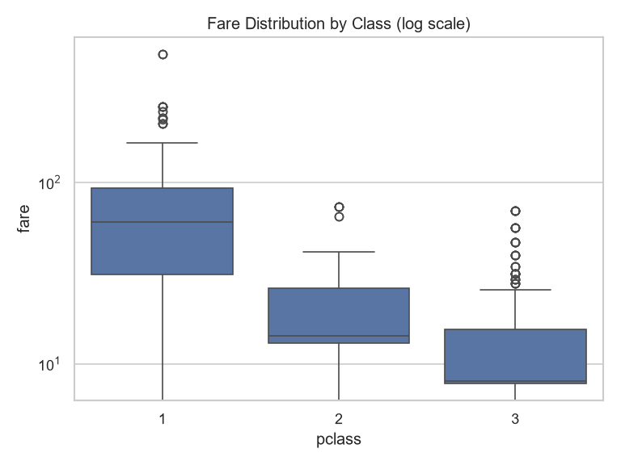
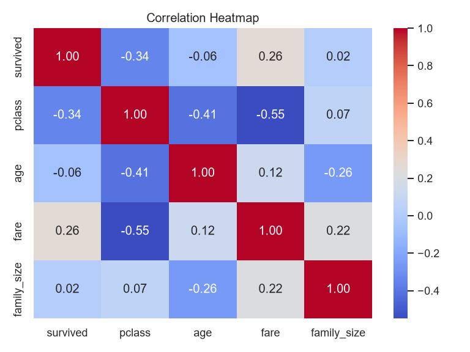

Titanic Survival: Exploratory Data Analysis
Who was more likely to survive, and why? Analysis of 891 passengers using Python, Pandas, Seaborn and Matplotlib.
Key numbers
38.4%Overall survival rate
74.2% vs 18.9%Women vs men survived
63.0% vs 24.2%1st class vs 3rd class survived
58.0%Children survived (best age group)
Charts

Survival by gender. Gender was the strongest factor: 74.2% of women survived vs 18.9% of men.

Survival by class and gender. Women in 1st and 2nd class survived at very high rates, while men in 3rd class had the lowest chances.

Survival by age group. Children had the best chances (58.0%), while seniors had the lowest (22.7%).

Survival by family size. Passengers travelling alone (30.4%) did worse than those in small families of 2 to 4 people.

Fare by class. Median fares were 60.29 (1st), 14.25 (2nd) and 8.05 (3rd). Log scale is used because a few fares are very high.

Correlation heatmap. Class has a negative link with survival (lower class number, higher survival), and fare has a positive link.
How the data was cleaned
- Missing values found:
age (177), deck (688), embarked and embark_town (2 each).
- deck: dropped, because about 77% of it was missing.
- embarked / embark_town: filled with the most common value (mode).
- age: filled with the median age of each class and gender group, which is more accurate than one overall median.
- Identical-looking rows: 107 rows look duplicated, but the dataset has no name or ID column, so they are different passengers and were kept.
Tools
Python, Pandas, Seaborn, Matplotlib